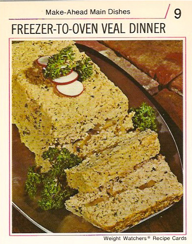

|
Ingredients:
- 2 pounds ground veal
- 1/2 cup tomato juice
- 1/4 cup dehydrated onion flakes
- 1 tablespoon Worcestershire sauce
- 2 teaspoons salt
- 3/4 teaspoon pepper
- 1/2 teaspoon garlic powder
- 1/2 cup sliced mushrooms
- 4 radish slices
- Parsley sprigs
Directions:
- Combine veal, tomato juice, onion flakes, Worcestershire, salt, pepper, and garlic powder. Mix well.
- Use 2/3 of the veal mixture to form a loaf.
- Spread mushrooms on the loaf in an even layer, up to 1/2-inch from each edge.
- Top with the remaining veal mixture. Mold firmly, being sure the veal totally covers the mushrooms.
- Wrap in freezer wrap and freeze until needed.
- To cook, thaw the veal loaf in refrigerator for a few hours.
- Preheat oven to 375°F.
- Bake veal loaf on a rack for 1 hour, or until well done.
- Arrange on a serving platter and garnish with radish slices and parsley sprigs.
- Serve warm. Makes 4 dinner servings.
|

|